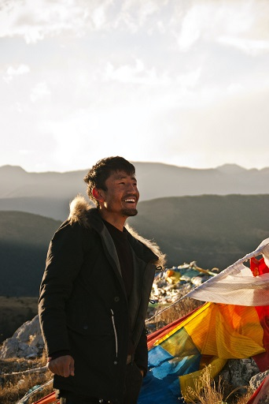
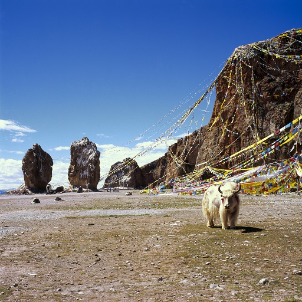

Un voyage découverte
Nous ferons un trek de plusieurs jours sur ce chemin de pèlerins qu’empruntent toujours à pied de nombreux tibétains entre les monastères de Ganden et celui de Samye.

01
La route marchande
Lors de ce trek, nous revivrons également lors d’une randonnée l’époque des caravanes tibétaines le long d‘une ancienne route marchande entre les monastères de Shalu et de Ngor. Sur les chemins du plateau.
02
Descente vers Katmandou
Puis nous quitterons le plateau tibétain, ce toit du monde pour retrouver le vert et les couleurs de la vallée de Katmandou, là où l’hindouisme a autrement écrit le monde.

03